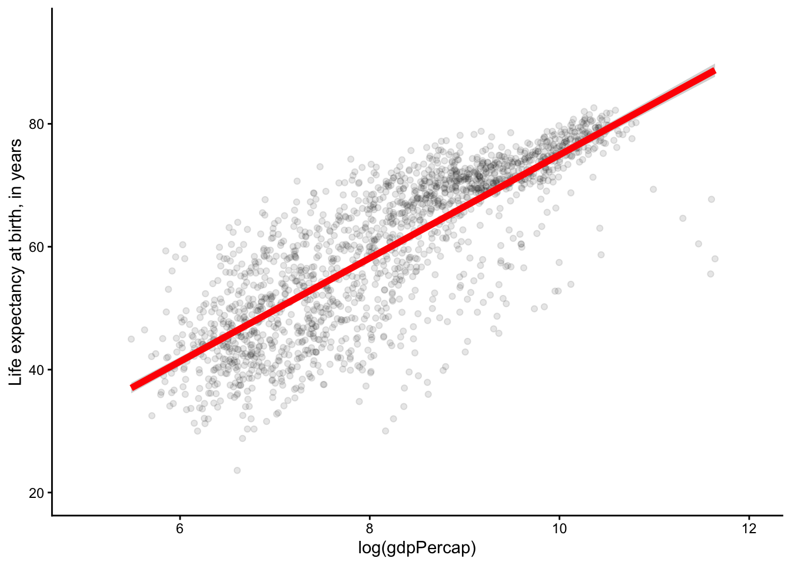
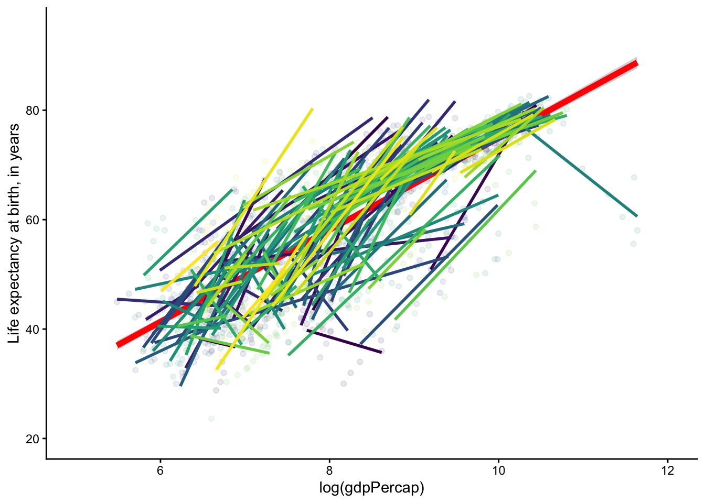

library(tidyverse)
library(fixest)
library(lme4)
library(broom)
library(causaldata)13 Fixed Effects Models
Slides for today are available here.
You can download a template file for this activity here.
Data Explorations
Before continuing, install required packages by entering install.packages(c("causaldata", "fixest", "lme4)) in the Console.
Gapminder data
We have yearly life expectancy data for all countries of the world from the Gapminder Institute. We also have yearly GDP data.
Let’s first load the Gapminder data:
gm <- causaldata::gapminderVisualizations
The first plot shows the relationship between log(GDP) and life expectancy that would be estimated using the overall data without looking at variation within a geographical unit.
The second plot shows trends by country.
Question: How do these plots motivate the need to look at within country variation?
# One overall trend line
ggplot(gm, aes(x = log(gdpPercap), y = lifeExp)) +
geom_point(alpha = 0.1) +
geom_smooth(color = "red", size = 2, method = "lm") +
coord_cartesian(xlim = c(5,12), ylim = c(20,95)) +
theme_classic()
# Overall trend line + country-specific trends
ggplot(gm, aes(x = log(gdpPercap), y = lifeExp, color = country)) +
geom_point(alpha = 0.1) +
geom_smooth(aes(x = log(gdpPercap), y = lifeExp), data = gm, color = "red", size = 2, method = "lm") +
geom_smooth(method = "lm", se = FALSE) +
coord_cartesian(xlim = c(5,12), ylim = c(20,95)) +
theme_classic() +
guides(color = FALSE) +
scale_color_viridis_d()
Fixed effects in fixest
The fixest package provides a fast way of estimating fixed effects models. The coefficient estimates are the same as from lm(), but it provides ways of adjusting the standard errors for correlation within a group.
Below we use feols() function from fixest to fit a fixed effects model with country-specific indicator variables.
# Model formula: Y ~ A + time invariant covariates + time fixed covariates | variables that we want indicators for
gm_mod_fe <- feols(lifeExp ~ log(gdpPercap) | country, data = gm)
# The cluster argument indicates that observations are clustered (correlated) within countries
summary(gm_mod_fe, cluster = ~ country)OLS estimation, Dep. Var.: lifeExp
Observations: 1,704
Fixed-effects: country: 142
Standard-errors: Clustered (country)
Estimate Std. Error t value Pr(>|t|)
log(gdpPercap) 9.76896 0.701507 13.9257 < 2.2e-16 ***
---
Signif. codes: 0 '***' 0.001 '**' 0.01 '*' 0.05 '.' 0.1 ' ' 1
RMSE: 5.06038 Adj. R2: 0.832467
Within R2: 0.410119- Interpretation: Within a given country, every one unit increase in log(GDP) is associated with an average increase in life expectancy of 9.77 years.
We can also have more than one set of fixed effects. It is common to have multiple observations for a unit over time, so we can have fixed effects for both unit and time (indicator variables for each unit and indicators for each time period). This is called a two-way fixed effects (TWFE) model.
gm_mod_twfe <- feols(lifeExp ~ log(gdpPercap) | country + year, data = gm)
# The cluster argument indicates that observations are clustered (correlated) within countries and within years
summary(gm_mod_twfe, cluster = ~ country+year)OLS estimation, Dep. Var.: lifeExp
Observations: 1,704
Fixed-effects: country: 142, year: 12
Standard-errors: Clustered (country & year)
Estimate Std. Error t value Pr(>|t|)
log(gdpPercap) 1.44986 0.644125 2.2509 0.045818 *
---
Signif. codes: 0 '***' 0.001 '**' 0.01 '*' 0.05 '.' 0.1 ' ' 1
RMSE: 3.26675 Adj. R2: 0.929686
Within R2: 0.018593- Interpretation: Within a given country and within a given year (separately), every one unit increase in log(GDP) is expected to increase life expectancy by 1.45 years.
For comparison purposes, let’s look at the results from using lm().
- We see the same coefficient estimates.
- We have lower standard errors with
lm()because assuming all observations are independent is assuming that we have a lot more information than if some observations are correlated (as within a country).
gm_mod_fe_lm <- lm(lifeExp ~ log(gdpPercap) + country, data = gm)
tidy(gm_mod_fe_lm) |>
filter(str_detect(term, "gdp"))# A tibble: 1 × 5
term estimate std.error statistic p.value
<chr> <dbl> <dbl> <dbl> <dbl>
1 log(gdpPercap) 9.77 0.297 32.9 3.80e-181gm_mod_twfe_lm <- lm(lifeExp ~ log(gdpPercap) + country + factor(year), data = gm)
tidy(gm_mod_twfe_lm) |>
filter(str_detect(term, "gdp"))# A tibble: 1 × 5
term estimate std.error statistic p.value
<chr> <dbl> <dbl> <dbl> <dbl>
1 log(gdpPercap) 1.45 0.268 5.42 0.0000000694Random effects using lmer
Another approach to fitting fixed effects models is to fit what are known as random effects models. Here we don’t estimate
A standard fixed effects model with one set of fixed effects for units can be written as:
\[ Y_{it} = \beta_0 + b_i + \beta X_{it} + \epsilon_{it} \]
where
- \(b_i\) are independent random variables following a \(\text{Normal}(0, \sigma_b^2)\) distribution
- \(X_{it}\) is a set of covariates
- \(\epsilon_{it}\) are independent random variables following a \(\text{Normal}(0, \sigma_e^2)\) distribution.
Key points:
- Each observation from unit \(i\) share the same \(b_i\). This induces correlation between repeated observations from the same unit.
- The individual \(b_i\)’s are not estimated. Only the variance of the normal distribution \(\sigma_b^2\) is estimated. Estimating fewer parameters increases statistical power.
We can use the lmer() function in the lme4 package to estimate this random effects model. (In the statistical literature, such a model is called a mixed effects model.)
# Model formula for one-way FEs: Y ~ (1|unit_var) + covariates
# Model formula for two-way FEs: Y ~ (1|unit_var) + (1|time_var) + covariates
gm_mod_re <- lmer(lifeExp ~ (1|country) + (1|year) + log(gdpPercap), data = gm)
summary(gm_mod_re)Linear mixed model fit by REML ['lmerMod']
Formula: lifeExp ~ (1 | country) + (1 | year) + log(gdpPercap)
Data: gm
REML criterion at convergence: 9727.8
Scaled residuals:
Min 1Q Median 3Q Max
-6.5735 -0.5559 -0.0012 0.5723 2.5075
Random effects:
Groups Name Variance Std.Dev.
country (Intercept) 75.35 8.680
year (Intercept) 26.75 5.172
Residual 11.85 3.443
Number of obs: 1704, groups: country, 142; year, 12
Fixed effects:
Estimate Std. Error t value
(Intercept) 38.8176 2.6135 14.85
log(gdpPercap) 2.5318 0.2471 10.25
Correlation of Fixed Effects:
(Intr)
lg(gdpPrcp) -0.771- Interpretation: Within a given country and within a given year (separately), a one unit increase in log(GDP) is expected to increase life expectancy by 2.53 years.
Note that this estimate is different from our fixed effects models. Why?
Important note: The statistical formulation of a random effects model assumes that \(b_i\) (the unit specific effects) are independent of (and thus uncorrelated with) the covariates in the model.
- In other words, this says that all the time-fixed covariates that go into a unit-specific effect \(b_i\) are unrelated to the other variables in our model.
- In causal inference, the key other variable in our model is the treatment variable.
- So in a random effects model, the unit-specific factors are assumed to be uncorrelated with other variables in our model, including treatment.
- In this context, time-fixed covariates that likely affect life expectancy include country geography, climate, environment, …
- In our random effects model, these covariates are assumed to be uncorrelated with GDP. This seems unlikely.
The last section of our textbook chapter discusses alterations to standard random effects models that can handle this.
Data on school expenditures and student outcomes
Research question: What is the effect of expenditures on math outcomes for 4th graders?
We have data across many school districts over multiple years. Focus on the following variables:
distid: the district identifieryear: the year the data is frommath4: the percentage of 4th grade students who are “satisfactory” or better in math (outcome)expp: expenditure per pupil (treatment)lunch: the percentage of students eligible for free lunch (time-varying confounder as a proxy for district socioeconomic status)
school <- read_csv("https://raw.githubusercontent.com/NickCH-K/TheEffectAssignments/refs/heads/main/mathpnl.csv")
# Make distid and year categorical
school <- school %>%
mutate(distid = factor(distid), year = factor(year))Exercise:
- Explore the difference between
lm()andfeols()to fit two-way fixed effects models that address our research question. - Compare results to a random effects model using
lmer().